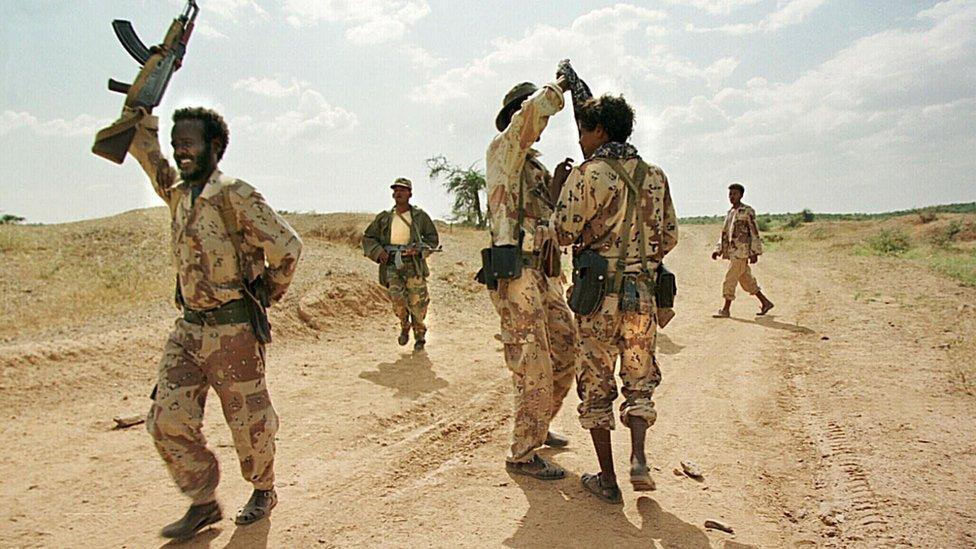

Hydropower makes up 6% of Australia’s electricity. But what is hydropower? Hydropower is when energy from water is converted into electricity. This most commonly comes from dams, which let water through that spin generators, the generators use electromagnets to generate electricity when they spin. Other forms of generators can be implemented into water pressuring systems, which can provide electricity to a house just by using a tap! InPipe Energy is an American company implementing this into people’s homes. If you would like to see a generator in action, take a look at our mini hydropower plant!
Hydropower is an incredible source of sustainable electricity that harnesses the power of moving water. It provides multiple benefits, serving as a reliable energy source for small towns and communities. One of the most remarkable aspects of hydropower is its efficiency, being about 95% more effective than fossil fuels. Overall, it stands out as a vital and clean energy solution, paving the way for a brighter, more sustainable future.

Using renewable energy plays a vital role in a sustainable lifestyle. Resources like water and solar power are renewable because it replaces itself at a rapid pace. These sources provides us with enough energy to allow humans to live a proper life. A sustainable energy source is an energy source that can be access at any time of day or night. It is also a type of energy that has zero effect on harming the environment. Examples of sustainable energy include wind, solar and water.
Most countries around the world have an electricity rate of 40% and under. This means most developing countries in Africa and Some of Asia have almost no access to electricity. This could have a very bad affect on the civilians of these developing countries. Some of these affects are lack of global information, Or buying food that goes bad after an hour because you don’t have a fridge/freezer.
